Introduction to ArcGIS Pro
ArcGIS Pro is a full-featured professional desktop GIS application from Esri. With ArcGIS Pro, you can explore, visualize, and analyze data; create 2D maps and 3D scenes; and share your work to ArcGIS Online or your ArcGIS Enterprise portal. The sections below introduce the sign-in process, the start page, ArcGIS Pro projects, and the user interface.
Sign in
The first time you use ArcGIS Pro, you sign in with the credentials of your ArcGIS Online or ArcGIS Enterprise organization. After that, you can sign in automatically.
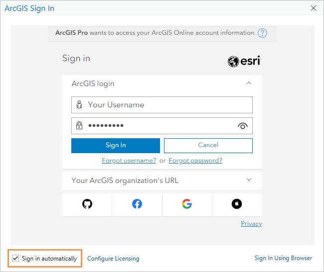
Once ArcGIS Pro starts, a sign-in menu appears at the top of the application window on the start page and in open projects. If you have more than one account, you can use the sign-in menu to change your active portal to access content or share items.
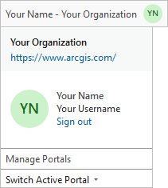 |
The sign-in menu as it appears in an open project. |
Start page
By default, ArcGIS Pro opens to a start page. The start page has a Home tab , a Learning Resources tab  , and a Settings tab
, and a Settings tab  .
.
Home tab
On the Home tab , you start new projects and open existing projects.
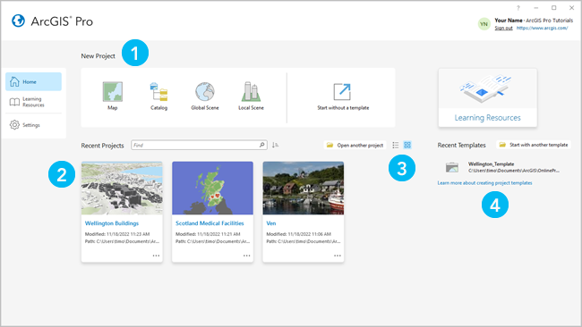 |
Element | Description |
|---|---|
 | Click a default template, such as the Map template, to start a new project. |
 | Click a recent project to open it. To open a project that is not in the list, click Open another project . |
 | Click List view or Tiles view to display projects according to your preference. |
 | Click a recent template to start a new project from a custom template. To start a new project from a template that's not in the list, click Start with another template . |
Learning Resources
On the Learning Resources tab , you can find resources to help you develop skills, solve problems, and answer questions. Learning resources can also be accessed from a side tab on the Settings page . In an open project, click the Learning Resources button on the Help tab of the ribbon.
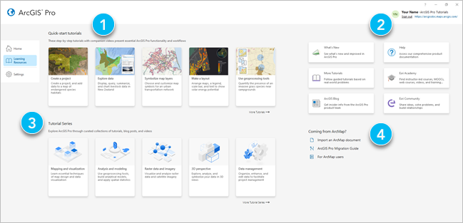 |
Element | Description |
|---|---|
| Quick-start tutorials introduce common ArcGIS Pro functionality and workflows. |
| You can access product documentation, learning materials, training, news, and the Esri Community site. |
| Tutorial series present learning materials related to an area of practice, such as mapping or analysis. |
| Resources are available to help ArcMap users learn ArcGIS Pro. |
Settings
On the Settings tab , you configure and manage the application. In an open project, the settings can be accessed from the Project tab on the ribbon.
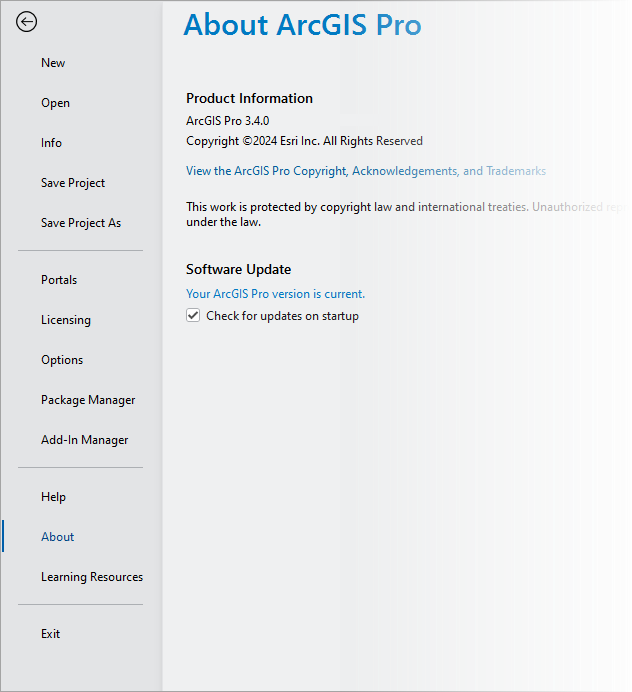
Tab | Description |
|---|---|
New | |
Open | |
Info | View info for the current project. |
Save Project | |
Save Project As | Save a copy of the current project. |
Portals | Manage portal connections and set the active portal. |
Licensing | View license information, authorize ArcGIS Pro to work offline, and change the license type. |
Options | Configure project and application options. |
Package Manager | Manage environments and packages for Python, R, and system libraries. |
Add-In Manager | Install add-ins that provide custom functionality. |
Help | Open the online or offline help system. |
About | View information about your ArcGIS Pro version and update to the latest version. |
Learning Resources | Access quick-start tutorials, tutorial series, and other . |
Exit | Close the application. |
Projects
In ArcGIS Pro, a project is a body of related work that may include maps, scenes, layouts, and connections to resources such as system folders and databases. Project files have the extension .aprx. By default, a project is stored in its own folder along with an associated file geodatabase and toolbox.
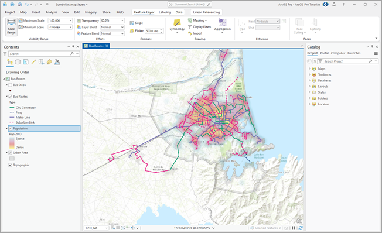 |
A project is shown with an active map. The ribbon is above the map. On either side of the map, the Contents and Catalog panes are open. |
ArcGIS Pro user interface
The main parts of the ArcGIS Pro interface are the ribbon, views, and panes. The Introducing ArcGIS Pro quick-start tutorial helps you explore the user interface.
Ribbon
A horizontal ribbon at the top of the application window organizes functionality in a series of tabs. Some tabs, called core tabs, are either always present or present when a certain type of view is active. For example, the Help tab is always present. The Map tab is present whenever a map view is active.
Other tabs, called contextual tabs, are present when the application is in a particular state, such as when a certain type of layer or a layer with specific properties is selected in a map. For example, when you select a feature layer in the Contents pane of a map, the Feature Layer, Labeling, and Data contextual tabs appear. Contextual tabs are outlined in white.
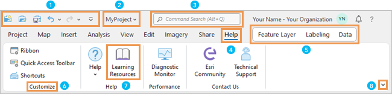 |
Element | Description |
|---|---|
| The Quick Access Toolbar has commonly used commands. |
| Click the drop-down arrow next to the project name to see where the project is stored and its last modification date and time. |
| Command search helps you find and run commands. |
| Core tabs, such as the Help tab, organize functionality. When a tab is selected, its associated tools and buttons appear on the ribbon. |
 | Contextual tabs, such as the Feature Layer, Labeling, and Data tabs, appear when the application is in a state appropriate for their use. |
Groups organize related commands on a ribbon tab. | |
Buttons and tools run commands. For example, the Learning Resources button accesses learning resources on the settings page. | |
Click Ribbon Display Options to choose between the classic ribbon or a simplified ribbon. You can also collapse the ribbon and show its tabs only. |
 Tip:
Tip:You can customize the ribbon and the Quick Access Toolbar.
Views
Views are windows for working with maps, scenes, layouts, tables, charts, the catalog, and other representations of your data. Several views can be open at the same time.
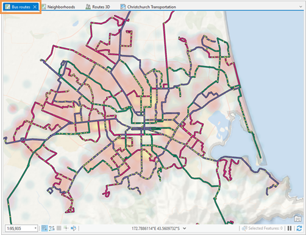 |
Click the tab at the top of a view to make the view active, drag it to another position, or close it. |
Panes
A pane is a window that displays the contents of a view (the Contents pane), the items in your project or active portal (the Catalog pane), or commands and settings for an area of functionality (the Symbology pane, Geoprocessing pane, Create Features pane, and so on).
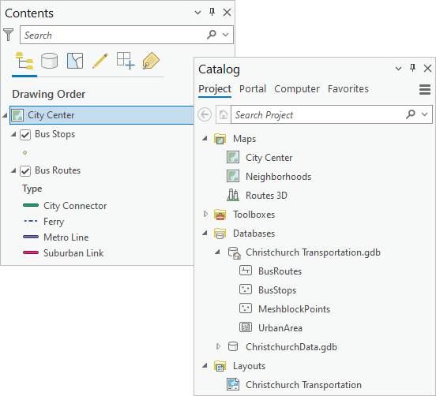 |
Panes provide functionality that may not be available on the ribbon. They organize functionality using rows of text tabs and graphical tabs. In some cases, they have multiple pages.
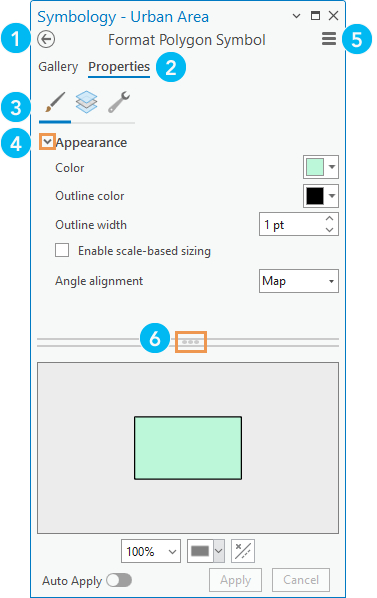
Element | Description |
|---|---|
| Some panes have multiple pages that you navigate with the Back button . |
| Text-based primary tabs, such as Gallery and Properties, organize functionality. |
| Graphical secondary tabs partition the functionality of a primary tab. |
| Expanders are small arrows that you click to show or hide settings. |
| The Menu button has additional commands. |
Handles allow you to resize areas of a pane by dragging. |
The Contents and Catalog panes are usually open in a project. Other panes appear in response to commands or actions. For example, when you click Locate on the Map tab of the ribbon, the Locate pane appears.
You can close panes or leave them open. If a pane is open when you close ArcGIS Pro, it will be open when you restart the application. You can manage some panes on the View tab on the ribbon. For example, you can click Reset Panes to choose a specific pane configuration.
When multiple panes are in use, they can be stacked on top of each other. Icons appear on stacked panes to help you identify them. You can click a drop-down arrow to display the full name of each pane.
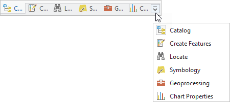 |
Arrange the user interface
You can arrange the elements of the user interface in various ways:
- Drag panes and views to docking targets.
- Stack panes and views on top of one another.
- Float panes and views above or away from the application window (including on a different monitor).
- Minimize views.
- Divide view space into vertical or horizontal tab groups to display more views.
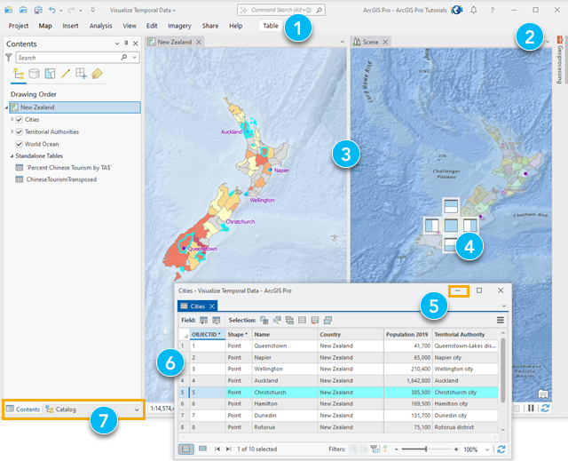 |
Element | Action | Method |
|---|---|---|
| Collapse the ribbon and show ribbon tabs only. | Press Ctrl+F1. |
| Automatically hide a pane to minimize it when not in use. | Click Auto-Hide in the pane's title bar. Alternatively, press Alt+Minus Sign for options. |
| Make a new tab group to divide view space. | Right-click a view tab or press Alt+Hyphen for options. |
| Dock a view. | Drag a view by its tab and drop it on one of the docking targets that appear. Alternatively, right-click the view tab of a floating view or press Alt+Hyphen for options. |
| Minimize a view. | Click the minimize button on the view. |
Float a view. | Drag a view by its tab and drop it away from docking targets. Alternatively, right-click the view tab or press Alt+Hyphen for options. | |
Stack panes to increase the area you have for views. | Drag a pane and dock it on top of another pane so they appear as tabs within a single window. |